How to install ReviOS¶
In this guide you will see how to install ReviOS (or any Windows for that matter).
We discuss here the installation of ReviOS with a USB drive (or usually called a flash drive in the guide). This guide also mentions a way to boot into the installer without a USB drive, but the main method is to use a flash drive. Another way is to use the script of iidanL, InstallWindowsWithoutUSB. We do not support this method of installing, use it at your own risk. (It sets up your new Windows to dual boot.)
0. step: Preparations¶
BIOS vs UEFI, MBR vs GPT¶
First, if you do not know if your PC have UEFI or Legacy BIOS, please consult your motherboard's or laptop's manual. Or go into your BIOS, by spamming the F2 or Del button when your PC is starting up. If it has a graphical interface that you can use with your mouse and not hurting your eyes to look at, you most likely have UEFI. In every other scenario, you probably have BIOS.
In short, if your PC is capable of booting in UEFI mode, we recommend selecting GPT, if not, select MBR later in Making a bootable flash drive. These technologies usually come in pair, like UEFI and GPT or BIOS and MBR. And while you could switch things up, like UEFI and MBR or BIOS and GPT, it is not recommended. Here, for example, the UEFI and GPT pair means UEFI boot mode on GPT partitions. Also, UEFI systems usually backward compatible and can boot in Legacy mode, often called CSM. If your system have CSM, it is recommended to switch it off, because the booting probably will be done in Legacy or BIOS mode otherwise.
Drivers¶
The second recommended thing to do before doing any other thing, is to download your drivers, at least your network drivers.
If you do not know how to that, we can give you a general idea, but sadly the manufacturer's websites are not designed similarly. The fastest way to find the drivers you need, just Google "<the name of your motherboard or laptop> drivers", of course without the < and > symbols. Click the search result, which takes you to the website of the manufacturer of your device. There find the drivers, probably under the Support section or something like that.
Alternatively, and this method should not be considered the default option, download the network drivers with Snappy Driver Installer Origin and take the whole folder of it with you before you format your partition(s). Help on this method can be found here, from the second paragraph.
Check what drives and partitions you have¶
The third thing recommended thing before installing, is to check what drives and partitions you have. More specifically, how Windows identifies them.
Open Disk Management by right-clicking on the Start menu icon, and selecting it.
Should look like this:
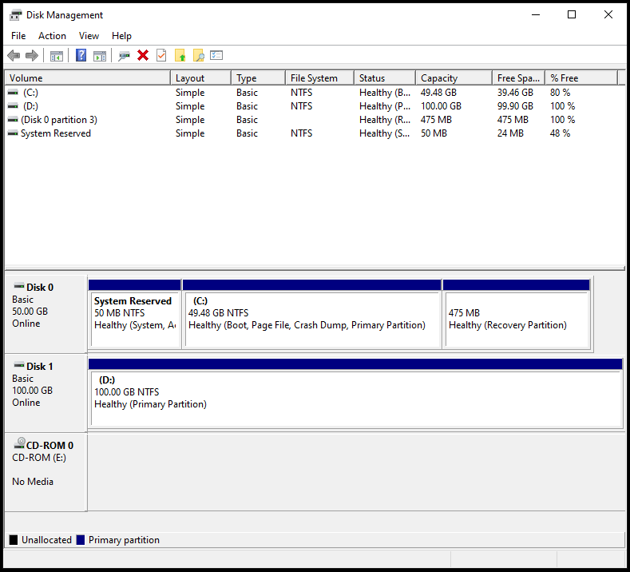
Here as you can see, this example has two drives, with the first having 3 partitions, and the second only one. This is a common setup, where the user has a drive which holds the OS, and another drive for everything else, e.g. data, movies, games.
The recommended way to do the installation is to at least format (or more like delete and recreate, you will see it at installing) the partitions storing the OS. So everything on the first drive, in this example. Additionally, you can format your second drive and it's partitions too, but make sure you backed up everything.
Another common setup is where you have one drive with multiple partitions. Here you will need to delete the OS partitions too (at least). Usually the C: partition, and other system and reserved and recovery partitions. Here too, additionally you can format all of your partitions, but make sure you backed up everything from these.
Additional advice is if you are worried you could not identify your partitions inside the installer, take note of the sizes of them. If you have multiple partitions with the same size, take note of the free space, too.
To reiterate, you will need to delete all OS partitions, not just the C: partition, but every system, reserved, recovery, etc. partitions too. These you can easily identify by the small, an only couple of megabytes size of them.
Backup¶
Warning
This Windows installing process will delete your previous OS, so you should back up everything you plan on seeing again in the future. At least have separate partition to save your data. Or you can move your things to a flash drive, even the installing flash drive, just after the 2. step, but before the 3.
1. step: Download ReviOS¶
You can find our supported versions on the Download page of our website.
Here download the version of your choice.
Verification¶
On Windows, go where you downloaded the installer of ReviOS, and Shift+Right-click on an empty space of the file explorer window, and select Open PowerShell window here. Type in the following command: Get-FileHash -Path <file name> -Algorithm SHA256, and replace the <file name> part with the name of the ReviOS installer file's name. You can use the Tab button to autocomplete the file name.
When the command returns with the hash of the file, compare it to the corresponding SHA-256 hash value on the Verification page of our website.
2. step: Making a bootable flash drive¶
Now you have 2 choices, either to use Rufus or Ventoy. This guide will show both.
Danger
Both of these methods/software will wipe everything from your flash drive. If you want to see the contents of it in the future, make a backup.
Ventoy¶
What makes Ventoy a better choice over Rufus is that you can use it on Linux too, and it's much easier.
You can download Ventoy here.
You do not need to install Ventoy, after extracting the zip file, just open Ventoy2Disk.exe.
Should look something like this:
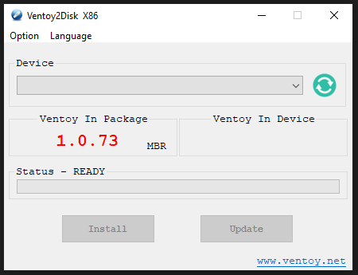
Select your USB device from the dropdown menu. If it is not present, in the Option menu select the Show All Devices option to show everything. But be sure to select the right device in the dropdown menu, because with this enabled, every storage device will be listed!
Select the partition style/scheme of your choice from Options, Partition Style. More detail in BIOS vs UEFI, MBR vs GPT
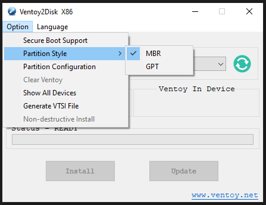
Additionally, you can select the Secure Boot Support, especially if you have Windows 11 and plan on playing with games or anti-cheat that require it.
Now click on the Install button.
After the software finishes, you can close the window.
You can now copy the ReviOS installer ISO file to the partition of the flash drive, called Ventoy.
On Linux, the method of using Ventoy should be the same.
Rufus¶
You can download Rufus here.
Like Ventoy, this software also does not need installation. Should look like this, after opening the EXE file:
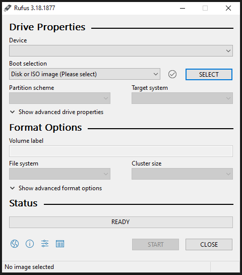
Here, first select your flash drive under the Device dropdown menu. If it is not present, click Show advanced drive properties, and tick List USB Hard Drives.
Then select the ISO file by clicking on the SELECT button.
With ReviOS 10 the only thing you need to do before starting to prepare your flash drive is to decide MBR or GPT you will use. If you do not what are those, this guide wrote in detail about it above.
Should look something like this with ReviOS 10:
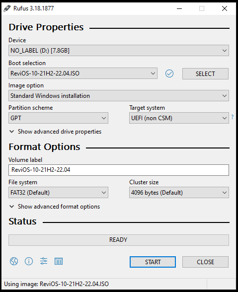
With ReviOS 11 select GPT. There is one more thing to look out for, and make sure you do not change it, no matter what hardware you have. It is the Image option. Again, it does not matter that you have TPM or not, do not change this option from Standard to Extended, because the ReviOS installer will not work!
Should look something like this with ReviOS 11:
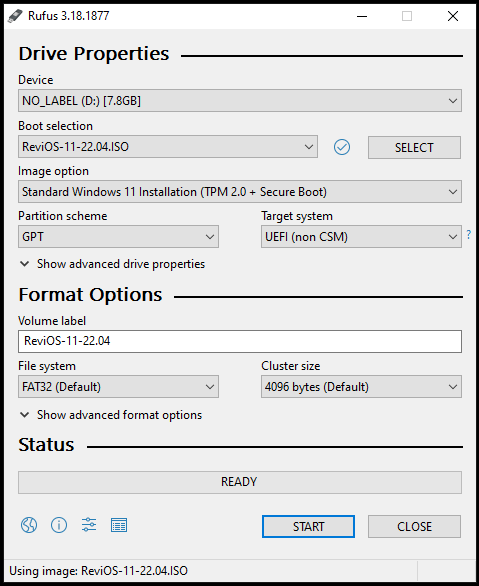
Now you can start the preparation, by clicking the START button
If you don't have a USB drive¶
...you can go into Disk Management, select one of your partitions that have atleast 4 to 5 gigabytes of free space. Right-click on that partition, and select Shrink Volume.... Then a window asks how many space do you want to cut of that partition, in megabytes. Write in 5120, but at least the size of the ISO file times 1024 plus 100.
A new partition will pop up. Right-click on it, and select New Simple Volume.... A setup wizard will appear, there you can select the letter and name of the partition, although those have not much relevance.
If you are done, the formatted partition will be ready for you to extract the contents of the ISO file. If you went with this method, the following steps should be the same, just this guide will call your partition with the installer's file a flash drive, not a partition.
3. step: Booting the flash drive¶
To boot into your flash drive, open Start menu, click on Power, and then hold Shift and click on Restart. This way, a full screen menu should come up looking like this:
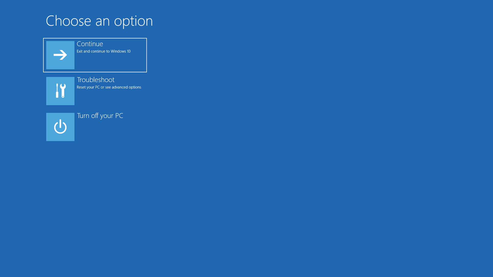
There if you have the option Use a device, click it, and then the option with the name of your flash drive or EFI USB Device.
If you do not have any of the options mentioned before, first consult the manual of your motherboard or laptop, and find out which key is the Boot Menu.
When you restart your PC, after it shutdown, and just started to boot up again, and you can see the logo of your motherboard/laptop, start spamming that key.
A list should come up with options to boot. Also, usually the last option is to enter BIOS. Here, choose the option with the name of your flash drive. If you have multiple options with the name of it, choose that boots in UEFI mode, if you selected GPT when preparing the flash drive. Or if it does not show the names, only USB Drive and Optical Drive and Hard Drive, something like those, obviously choose the USB Drive like option.
4. step: Installing¶
If you have done everything good so far, the installer boot up, and should look like this:
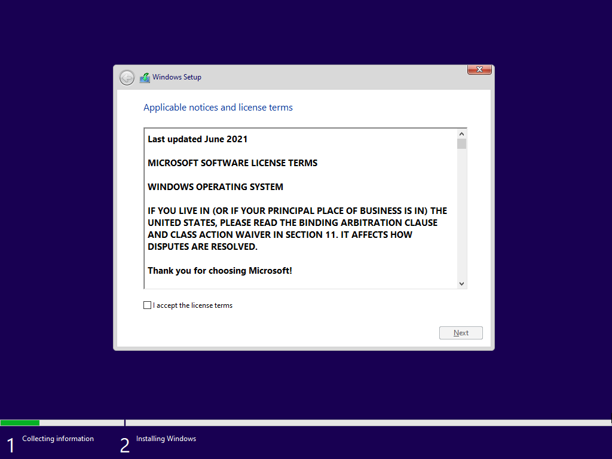
Accept the license terms, and then the disk selection step comes up. Here you have multiple choices, depending on the configuration you are using. This part of the setup relies on the knowledge of your drives, which we discuss at Check what drives and partitions you have.
The most common setup: one drive with the OS and another for everything else¶
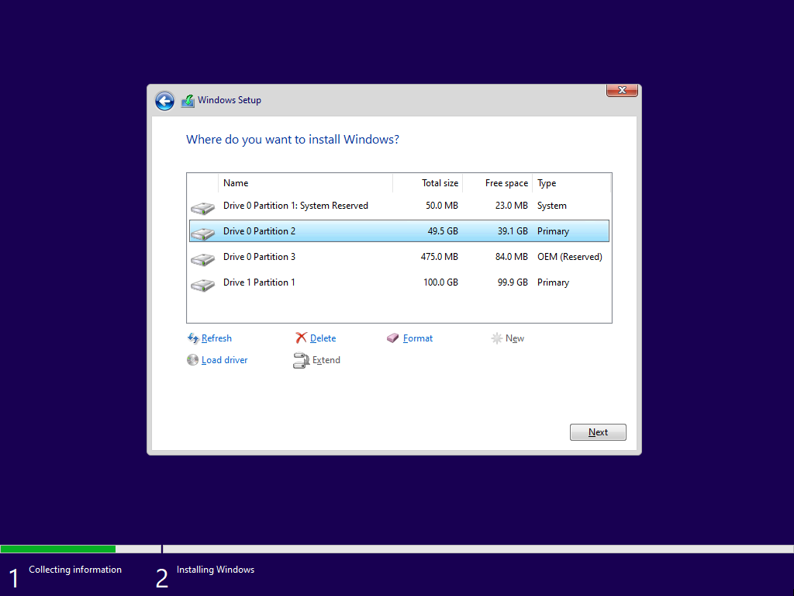
Check what partitions your previous Windows installation uses, and delete those with the Delete button.
And then select the drive which used to store your previous Windows, and click New and Apply. This creates a new partition from the whole drive, and could and probably will make other, OS related partitions, as the pop-up window says: To ensure that all Windows features work correctly, Windows might create additional partitions for system files.
Additionally, if you want a clean start, you can format your other drive(s) too.
Other setups¶
If you have a similar setup - like on the picture -, just the extra data partition (Drive 1 Partition 1 in this example) is on your first drive (Drive 0), then you should only delete the ones that associated with Windows, like obviously the Primary that holds the files of the previous OS, and also the system, reserved, recovery, etc. partitions that are only megabyte sized.
For example, if we pretend that on the picture above the Drive 1 Partition 1 is part of Drive 0, and it is Partition 4, and you do not want to lose the data on that, you should not delete it, but every other partition you most definitely should.
After you created the partitions you wanted, select the first you created, the one you meant for the OS, and click Next.
The installation started, you do not need to do anything for a while.
If the installer finishes, it will restart.
Then the OS will load for a bit, with the text Getting ready on the screen.
Then it will restart again.
5. step: Windows post install setup¶
After the last restart you should arrive at this screen, obviously here you have to choose a username:
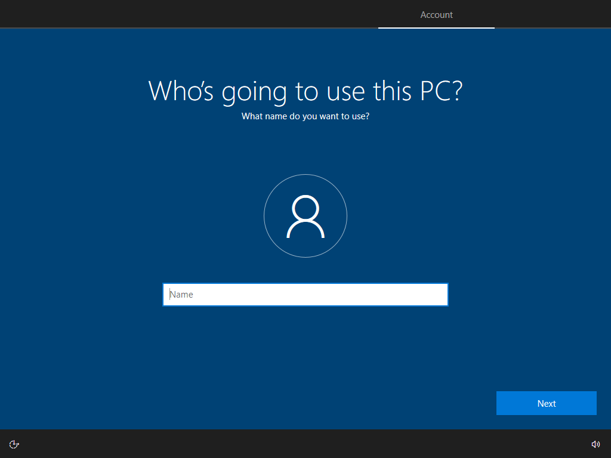
And here a password. You can skip this question by just clicking on Next. But be warned, this can lead to a bug in ReviOS. More detail here.
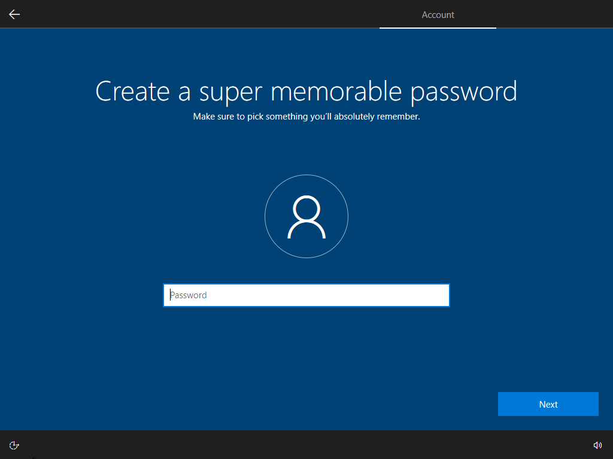
Here just press Not now. Even if you press Accept, Cortana probably will not work.
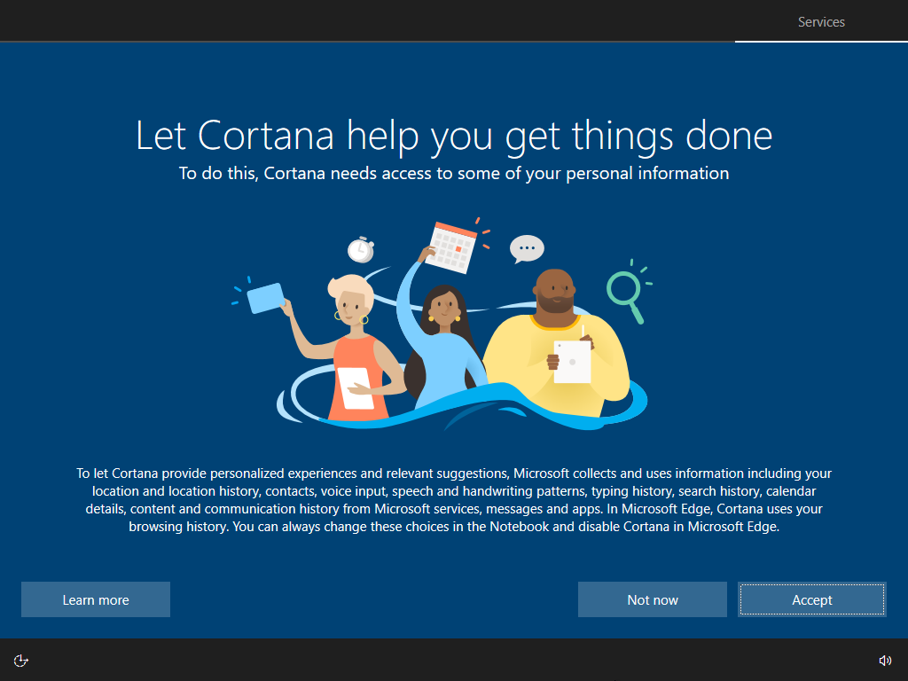
You are done with the Windows post install setup, the OS will load for some time.
6. step: Finishing the installation¶
After arriving at your desktop, first, let the script that popped up run through. Do not do anything until the script restarts your PC. If it is not closing, read this article.
After your PC boots up again, this guide have some recommendation to go through.
-
Activate your Windows with a valid Pro key. Help in the ReviOS Post-Install guide.
-
In
Settings→Time & Language→Language, and add your language, even if you want to use Windows on English. To change your keyboard layout to non-English, you need to add that language. After that, you can change your regional format or keyboard layout or even what language Windows displays: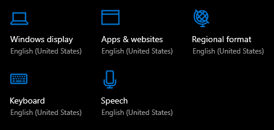
-
Set the time, because ReviOS's default is the UTC time zone.
Settings→Time & Language→Date & time -
Download and install your drivers. This guide discussed downloading and installing drivers before, in great detail, check it here.
Also, forget any driver installer software like Driver Booster and others like it. The only driver installer you ever should use is Snappy Driver Installer Origin, and only as a last resort, if you really cannot find your drivers or one of them is faulty.
-
Go through the whole ReviOS Post-Install guide.